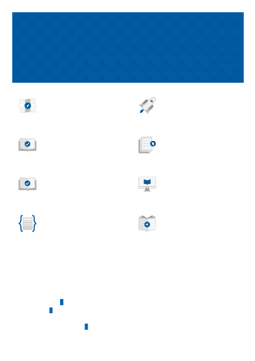

Tell us about your PDF experience.
O V E R V I E W
Q U I C K S T A R T
H O W - T O G U I D E
T U T O R I A L
H O W - T O G U I D E
T R A I N I N G
Intro to Azure OpenAI training
C O N C E P T
R E F E R E N C E
Additional resources
Azure OpenAI
Apply for access to Azure OpenAI
Video
Combining OpenAI models with the power of Azure
Azure OpenAI Service Documentation
Learn how to use Azure OpenAI's powerful language models including the GPT-3, Codex and
Embeddings model series for content generation, summarization, semantic search, and natural
language to code translation.